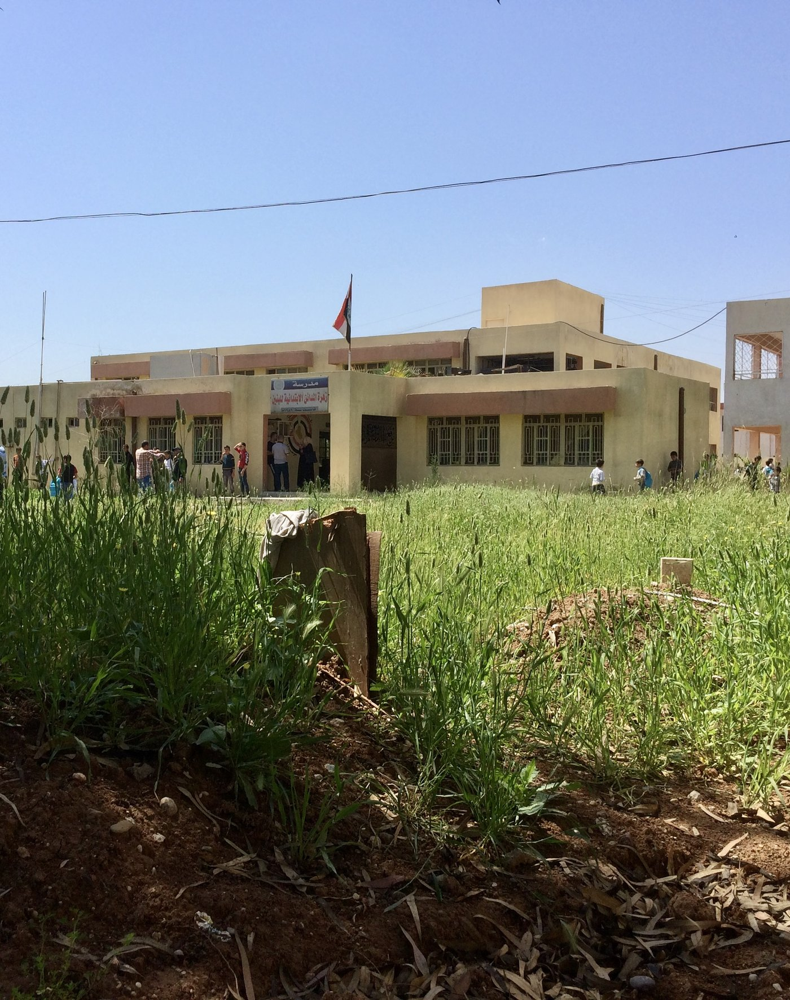
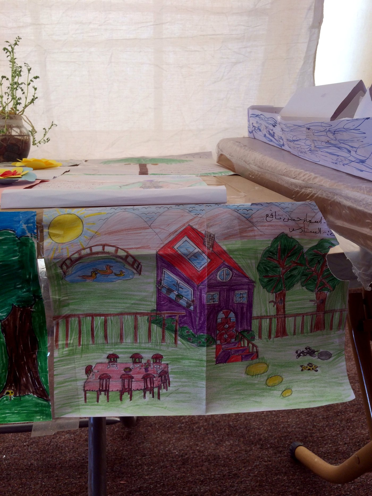
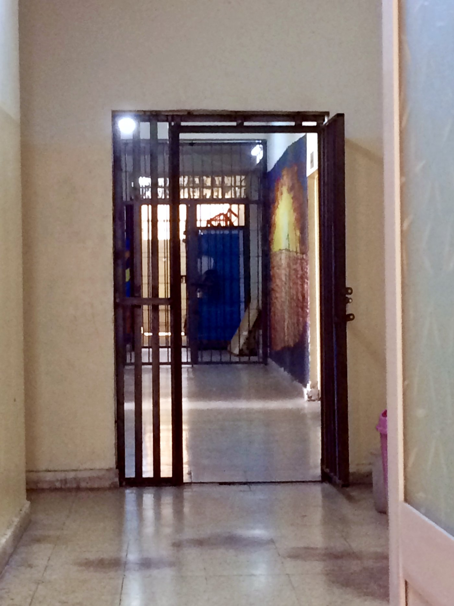

A makeshift grave in the yard of a primary school north of Mosul, Iraq (Revkin 2017)

A child’s drawing of a house and garden, displacement camp east of Mosul (Revkin 2017)

Children’s drawings in a displacement camp east of Mosul, Iraq (Revkin 2017)

A corridor inside a detention facility in Erbil, Iraq (Revkin 2017)
Back to Research Areas or Policy & NGO Reports.